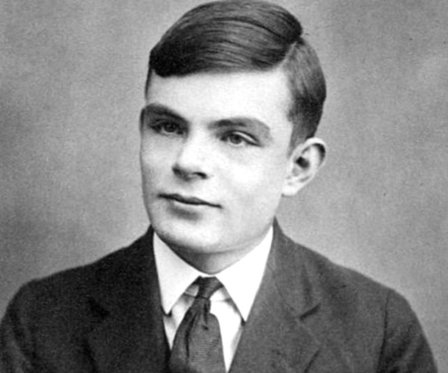

Alan Turing
June 1912 - June 1954
Alan Turing's contributions:
Alan Turing was a computer pioneer. He is so well known they have a test about testing a machines ability to think named after him,
the Turing test. But by far his most important discovery was the Enigma code. His discovery is one of the most cruial and pivotal points
in the Second World War. With the help of some information from crytanalysts from Poland and France, Turing and his team were able
to crack the Enigma code for the German U-boats, a very feared German submarine. Alan Turing who was a mathematician and logician
cracked on of the hardest codes, encrypted code. His discovery helped the Allies in WW2 to avoid German U-boats entirely meaning that
rarely any allied ships would be sunk. In other words his discovery allowed for more troops, ammunition and supplies could be transported
to the frontlines. Now the "Turing" award is known to be the Nobel Peace prize of computer science.
Timeline of Alan Turing:
1912: June 7th Alan Turing was born in Maida Vale, London
1918: Goes to a school in Hastings, where he struggles and gets bad grades
1926: Turing attends a school in Sherbourne where he starts loving math and science
1928: Turing is introduced to Albert Einstein and is so bright he even starts questioning the laws of motion
1936: Turing first creates the "Turing Machine," a computing device that can perform math represented in an algorithm
1938: Alan Turing got his PhD from Princeton University
1939: Turing joins the gouvernements codes and ciphers school where he helps to develop "the bombe"
to help try and decipher the German Enigma
1942: Turing cracked the Enigma, he moves to the USA to help make a bombe with the american cryptologists
Turing and his team write immense amount of sophisticated code for an unbiul automatic computing engine or ACE
1949: Alan works on software for one of the earliest stored-program computers
1954: Alan Turing dies of cyanide poisoning in his home in Wilmslow, England
Famous Quote: “Those who can imagine anything, can create the impossible.” -Alan Turing